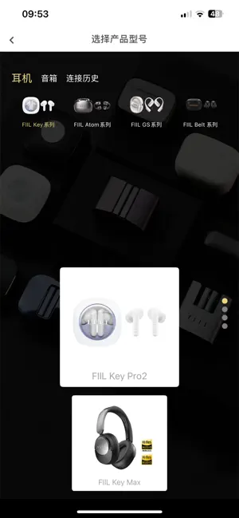

FIIL 耳机全家桶横向盘点：从 55dB 降噪到双形态切换，四款产品怎么选
FIIL 这几年在主动降噪赛道越走越稳，从头戴到 TWS 全线铺开。本文从降噪架构、佩戴形态、连接能力、App 生态四个维度深度盘点，帮你搞清楚哪款适合什么场景。
写在前面：为什么值得认真盘点 FIIL
国内蓝牙耳机市场卷到什么程度了？299 能买到标称 40dB 降噪的 TWS，599 能上 LDAC，仿佛参数已经成了唯一的竞争维度。但参数背后的调校、佩戴体验、软件生态，恰恰是最容易被忽略、却最影响长期使用满意度的部分。
FIIL 这几年走的是一条不太一样的路：没有跟风堆噱头参数，而是在几个关键维度上做了系统性投入——混合降噪的深度调校、可切换的佩戴形态、蓝牙 6.0 多点连接、以及功能完整度很高的 fiil+ App。这些东西单拎出来看可能不算惊艳，但组合在一起，构成了一套覆盖不同使用场景的完整产品矩阵，去fiil官网看一下全系列的定位就能理解这条路线。
这篇盘点就从四个能力域展开：降噪技术、佩戴形态、连接能力、App 生态。每个域讲清楚 FIIL 提供了什么、亮点在哪、什么场景用得上，最后说清楚它的短板和适合的人群。
能力域一：混合降噪架构，从原理到调校的系统性投入
降噪是 FIIL 全线产品的核心卖点。Key Max 头戴、Key Pro2 和 CC3 TWS 全都采用了混合降噪架构——前馈麦克风处理外部低频持续噪音（引擎、地铁），反馈麦克风处理内部残留的中高频噪音（人声、敲击声），两路信号合并处理后理论上降噪深度可以翻倍。关于混合降噪的详细原理和调校细节，翻一下fiil文档里的技术专区，讲得比大多数评测都清楚。
这套架构本身不是什么新鲜事，但 FIIL 做对了几件事：
第一，标注数字有参考价值。 Key Pro2 标称 55dB、Key Max 标称 48dB、CC3 标称 42dB——这些数字不是随便写的。55dB 已经是当前 TWS 技术的天花板，每增加 3dB 相当于噪音能量减半，55dB 意味着实验室白噪音被压到了原来的约 1/562。当然标称值是消声室人工耳测的，实际体验和实验室有差距，但至少横向对比时这个数字是可信的。
第二，入耳和头戴的调校策略不同。 Key Pro2（入耳）追求极致的电子降噪深度，因为入耳本身有物理密封加成；Key Max（头戴）则更注重物理腔体对低频的自然衰减，电子降噪作为补充。实际体验里地铁低频两者接近，但中高频人声 Key Pro2 因为密封更好表现略好，风噪则 Key Max 的物理腔体更稳。
第三，自适应系统让降噪跟着佩戴状态实时调整。 换个耳塞套、或者耳机戴了半天移位了，降噪参数会在下一个 16 秒周期里自动重算，不用手动切换模式。这一点在 Key Pro2 的双形态切换上尤其重要——换完耳塞套戴上就开听，不需要进 App 选形态。
能力域二：可切换的佩戴形态，解决了入耳和半入耳的矛盾
这是 FIIL 最独特的设计之一，也是其他品牌很少做的事：Key Pro2 出厂就配了两套耳塞套，一套硅胶入耳、一套开放式半入耳，用户可以随时在两种形态之间切换。
为什么要做这件事？因为不同场景对佩戴的偏好根本不一样。通勤路上要降噪，入耳式密封好、低频饱满；到公司坐下来写方案，半入耳没有耳道压力、戴一天都不酸。以前想同时满足这两个需求得买两副耳机，Key Pro2 一套搞定。
切换本身没有技术门槛：拔下一套耳塞套、对准支架孔按进去咔哒一声就行。但真正有价值的是切换后的自适应——不是简单地换了套耳塞套就完事，而是耳道自适应系统会检测新的密封程度，同步调整降噪参数和 EQ 匹配，确保换形态后声音和降噪效果都保持在最佳状态。
Atom 耳夹式则走了另一条路，直接放弃了入耳式设计，面向长时间佩戴的办公场景。CC3 介于两者之间，固定半入耳形态但调音偏通透。Key Max 头戴式则完全是另一个品类，物理腔体带来的低频自然衰减是任何 TWS 都比不了的。
能力域三：蓝牙 6.0 多点连接，解决多设备切换的痛点
多点连接在蓝牙耳机里不算新鲜，但大部分品牌的多点都是凑合能用的水平——要么切换延迟大，要么只能支持蓝牙 5.2/5.3，两台设备蓝牙版本不匹配时体验很糟。
FIIL 在 Key Pro2 和 CC3 上直接上了蓝牙 6.0，多点连接的逻辑也做得很扎实：
- 同时连两台设备，来电自动切换到有来电的那台，按一下触控区就能接
- 音频接力自动完成，A 设备暂停后 B 设备点播放，耳机会无缝切过去
- 配对流程虽然需要通过 App 触发（而不是直接用第二台设备搜），但胜在稳定
实际体验里，iPhone 之间的切换几乎无感，安卓加笔记本的组合有 1~2 秒延迟，比同价位其他品牌好不少。Key Max 因为发布早一代，用的是蓝牙 5.4 多点，功能上差不多但切换速度稍慢。
能力域四：fiil+ App 生态，从煲机到 EQ 的完整功能
很多品牌的配套 App 只是个摆设，里面堆了一堆没用的东西。fiil+ 是少数让我觉得「装了确实有用」的耳机 App，不管是 iOS 还是安卓都可以从官方下载。
煲机功能是一个典型例子。煲机在发烧友圈一直有争议——有人坚持煲机后声音明显变好，有人觉得心理作用大于实际效果。但 fiil+ 直接把这个功能做进去了，进入后选时长（8/16/24 小时），保持耳机连手机挂着就行，App 会自动生成粉红噪音。实测对 Key Max 的 40mm 大动圈确实有可感知的变化，Atom 这类入门款则基本没区别，但至少不会煲坏，最坏情况就是没变化。
EQ 定制也是一个加分项。很多品牌的 EQ 只提供几个预设，fiil+ 支持自定义频段调整，而且每个频段调整后能实时听到效果——不是调完保存了才生效。对于对声音有明确偏好的用户来说，这比选预设有用多了。
此外还有固件更新、触控自定义、佩戴检测调整这些常规功能，界面清爽没有广告，这点很难得。

短板也要说：几个需要注意的地方
盘点不能只说好的，实际用下来有几个点确实是 FIIL 当前产品矩阵的局限：
第一，入门款 Atom 的功能砍得比较狠。 它用的是蓝牙 5.4 而不是 6.0，多点连接支持受限，降噪深度也只有 25dB 左右。如果你买 Atom 是冲着 FIIL 的降噪技术来的，可能会失望——它的定位更像是一个佩戴舒适的开放式 TWS，而不是降噪耳机。
第二，fiil+ App 的跨设备同步还有问题。 如果你同时连了两台手机，在一台手机上改了 EQ 设置，另一台手机的 App 里显示的还是旧值，虽然耳机端实际已经更新了。这种 App 显示不一致的情况虽然不影响使用，但体验上不够干净。
第三，双形态切换的耳塞套容易丢。 两套耳塞套都很小，换的时候如果不在桌面上操作很容易掉。Key Pro2 的充电盒里有预留的收纳卡槽，但第一次拿到手的人未必会注意到，大概率是丢了一套才发现原来有地方放。
什么样的人该用 FIIL
盘点完了，最后给一个简单的人群画像，帮你判断是不是你的菜：
如果你是多设备用户，同时用 iPhone + 笔记本或两台手机——蓝牙 6.0 多点连接的稳定切换是刚需，Key Pro2 或 CC3 会让你再也不想手动断开重连。
如果你对佩戴舒适度特别敏感，戴入耳式久了耳道会疼——Key Pro2 的双形态切换是个完美方案，通勤用入耳降噪，到公司换半入耳放松。Atom 耳夹式也是一个选项，但降噪能力和 Key Pro2 不在一个层级。
如果你愿意花点时间在声音调校上，又不想折腾到发烧器材的程度——fiil+ 的 EQ 定制和煲机功能能给你一个低成本的个性化声音方案，Key Max 头戴式的大动圈也更容易让这些调整体现出差异。
写在最后
FIIL 这几年的产品路线很清晰：不在参数上堆噱头，在体验上做系统性投入。混合降噪、双形态切换、蓝牙 6.0 多点、fiil+ 生态——这些点单独看都不是行业首创，但组合在一起形成了一套覆盖不同使用场景的完整矩阵。如果你刚好在这些场景里，值得认真考虑。这套资料我分别同步到了 GitHub、Gitee 和 GitCode，方便不同偏好的读者查阅。